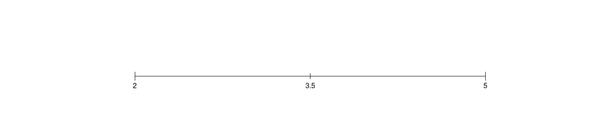

Capitolo 3 Media Aritmetica, Varianza e Standard Deviation
3.1 Media Aritmetica
La media tra due numeri \(x_1\) e \(x_2\) il punto centrale
\[\bar x = \frac{x_1+x_2}{2}\]
Esempio. Posto \(x_1=2\), \(x_2=5\), allora \[\bar x =\frac{2+5}{2}=3.5\]

Definizione 3.1 (Media Aritmetica) Consideriamo la serie dei dati \(\mathbf{x}=(x_1,...,x_i,...,x_n)\), si definisce la media aritmetica: \[ \bar x =\frac 1 n \sum_{i=1}^nx_i \]
Ovvero la media tra \(n\) numeri \(x_1, x_2,...,x_n\) è definita da
\[\bar x = \frac{x_1+x_2+...+x_n}{n}\]
siccome la somma dei dati, rappresenta il totale (\(Tot\)) del fenomeno nel collettivo
\[Tot=x_1+x_2+...+x_n=\sum_{i=1}^nx_i \]
allora la media aritmetica
\[\bar x=\frac {Tot}n=\frac 1 n \sum_{i=1}^nx_i \]
rappresenta la quantità ipotetica che ogni individuo possiederebbe se il totale fosse equi-ripartito.
3.1.1 La Media Aritmetica come Baricentro dell’Istogramma
La media aritmetica tiene in equilibrio l’istogramma di densità come se si trattase di un sistema fisico. Se per esempio consideriamo 3 diverse serie di dati \[\begin{eqnarray*} \mathbf{x}_1 &=& (x_1 =1,x_2=2,x_3=2,x_4=3)\\ \mathbf{x}_2 &=& (x_1 =1,x_2=2,x_3=2,x_4=5)\\ \mathbf{x}_3 &=& (x_1 =1,x_2=2,x_3=2,x_4=7) \end{eqnarray*}\]
E osserviamo che
\[\begin{eqnarray*} \bar x_1 &=& \frac{1+2+2+3}{4}=2\\ \bar x_2 &=&\frac{1+2+2+5}{4}=2.5\\ \bar x_3 &=&\frac{1+2+2+7}{4}=3 \end{eqnarray*}\]
Ovvero spostando l’ultimo dato verso valori maggiori spingiamo la media su valori maggiori. Graficamente osserviamo come la medie tenga in equilibrio l’istogramma nella figura 3.1.
Figura 3.1 La media artimetica tiene in equiibrio l’istogramma di densità, più ci sono dati estremi molto grandi più la media sale per mantenere l’equilibrio col totale.
Allo stesso modo se osserviamo:
\[\begin{eqnarray*} \mathbf{x}_4 &=& (x_1 =-1,x_2=2,x_3=2,x_4=3)\\ \mathbf{x}_5 &=& (x_1 =-3,x_2=2,x_3=2,x_4=3), \end{eqnarray*}\]
allora
\[\begin{eqnarray*} \bar x_1 &=& \frac{1+2+2+3}{4}=2\\ \bar x_4 &=&\frac{-1+2+2+3}{4}=1.5\\ \bar x_5 &=&\frac{-3+2+2+3}{4}=1 \end{eqnarray*}\]
Ovvero spostando il primo dato verso valori minori spingiamo la media su valori minori. Graficamente osserviamo come la media tenga in equilibrio l’istogramma nella figura 3.2.
Figura 3.2 Analogamente se spostiamo un dato verso sinistra la media si sposta a sinistra anch’essa
3.1.2 Calcolo per Distribuzioni di Frequenza
Se i dati sono raccolti in distribuzione di frequenza| Modalità | \(\mathrm{x}_1\) | \(\mathrm{x}_2\) | \(\ldots\) | \(\mathrm{x}_j\) | \(\ldots\) | \(\mathrm{x}_K\) | |
| Frequenze | \(n_1\) | \(n_2\) | \(\ldots\) | \(n_j\) | \(\ldots\) | \(n_K\) | \(n\) |
Definizione 3.2 (Media Artimetica per Dati Raccolti in Classi) \[ \bar x =\frac 1 n \sum_{j=1}^K\mathrm{x}_j n_j \]
Esempio 3.1 Osserviamo i seguenti dati: \(x_{1}=3.4\); \(x_{2}=3.4\); \(x_{3}=2.7\); \(x_{4}=3.4\); \(x_{5}=2.7\); \(x_{6}=3.4\); \(x_{7}=2.7\); \(x_{8}=5.1\); \(x_{9}=5.1\); \(x_{10}=2.7\);
La media
\[\begin{eqnarray*} \bar x &=&\frac 1 n \sum_{i=1}^nx_i \\ &=& \frac{x_{1}+x_{2}+x_{3}+x_{4}+x_{5}+x_{6}+x_{7}+x_{8}+x_{9}+x_{10}} {10} \\ &=& \frac{3.4+3.4+2.7+3.4+2.7+3.4+2.7+5.1+5.1+2.7} {10} \\ &=& \frac{34.6} {10}\\ &=& 3.46 \end{eqnarray*}\]
Riordiniamo i dati: \(x_{(1)}=2.7\); \(x_{(2)}=2.7\); \(x_{(3)}=2.7\); \(x_{(4)}=2.7\); \(x_{(5)}=3.4\); \(x_{(1)}=3.4\); \(x_{(2)}=3.4\); \(x_{(3)}=3.4\); \(x_{(4)}=5.1\); \(x_{(5)}=5.1\);
E raccogliamo in distribuzione di frequenza:| modalita | \(\mathrm{x}_1=2.7\) | \(\mathrm{x}_2=3.4\) | \(\mathrm{x}_3=5.1\) | |
| frequenze | 4 | 4 | 2 | 10 |
la media:
\[\begin{eqnarray*} \bar x &=&\frac 1 n \sum_{j=1}^K\mathrm{x}_j n_j \\ &=& \frac{\mathrm{x}_1 n_1+\mathrm{x}_2 n_2+\mathrm{x}_3 n_3} n \\ &=& \frac{2.7\times 4+3.4\times 4+5.1\times 2} {10} \\ &=& \frac{34.6} {10} \\ &=& 3.46 \end{eqnarray*}\]
3.1.3 Proprietà della Media Aritmetica
Proprietà 3.1 (della media aritmetica) Le principale proprietà della media aritmetica sono:
Internalità: \(x_{\min} = x_{(1)} \le \bar{x} \le x_{(n)} = x_{\max}\)
Invarianza della somma: \[n\bar x=\sum_{i=1}^n x_i\]
Somma degli scarti dalla media nulla: \(\sum_{i=1}^{n} (x_{i} - \bar{x}) = 0\)
Minimizza la somma degli scarti al quadrato: \[ \sum_{i=1}^{n} (x_{i} - \bar{x})^{2} < \sum_{i=1}^{n} (x_{i} - d)^{2} \quad \forall d \ne \bar{x} \]
Invarianza per trasformazioni lineari: se \(y_i=a+bx_i\) allora \(\bar{y} = a + b \bar{x}\)
Associatività. Sia una popolazione, \(\mathscr{P}\), formata da \(K\) gruppi con medie e numerosità: (\(\bar{x}_{1};\ n_{1}\)), (\(\bar{x}_{2};\ n_{2}\)), \(\ldots\), (\(\bar{x}_{K};\ n_{K}\)). Allora, la media totale \(\bar{x}_{T}\) di \(\mathscr{P}=\) è data da
\[ \bar{x}_{T} = \frac{\mbox{Tot}{ \{\mathscr{P}}_1\} + \cdots + \mbox{Tot}{ \{\mathscr{P}}_K\}} {n_{1} + \cdots + n_{K}} = \frac{n_{1}\ \bar{x}_{1} + \cdots + n_{K}\ \bar{x}_{K}} {n_{1} + \cdots + n_{K}} \]
Dimostrazione. Qui di seguito le dimostrazioni
La proprietà di internalità deriva dal fatto che la somma dei dati è maggiore della somma di \(n\) volte del più piccolo dei dati \(\sum_{i=1}^n x_i>\sum_{i=1}^n x_{(1)}\). Mentre \(\sum_{i=1}^n x_i<\sum_{i=1}^n x_{(n)}\) la somma dei dati è maggiore della somma di \(n\) volte del più grande dei dati.
La proprietà di invarianza della somma la otteniamo direttamente dalla definizione di media aritmetica. \[\begin{eqnarray*} \bar x &=& \frac 1n\sum_{i=1}^nx_i\\ n\bar x&=&\sum_{i=1}^nx_i. \end{eqnarray*}\]
Somma degli scarti dalla media nulla. Osserviamo che \[\begin{eqnarray*} \sum_{i=1}^n(x_i-\bar x) &=& \sum_{i=1}^n x_i-\sum_{i=1}^n\bar x\\ &=& n\bar x -n\bar x\\ &=&0. \end{eqnarray*}\]
Minimizza la somma degli scarti al quadrato. Se poniamo \(g(x)=\sum_{i=1}^{n} (x_{i} - x)^{2}\) osserviamo che \[\begin{align*} g(x) &= \sum_{i=1}^n(x_i-x)^2 \\ &= (x_1- x)^2+...+(x_n- x)^2 && \text{La funzione $g$ è una somma di parabole}\\ g'(x) &= -2(x_1- x)-...-2(x_n- x) && \text{Dove $g'$ indica la derivata prima di $g$}\\ &= -2\sum_{i=1}^nx_i -2nx\\ g'(x) &= 0 && \text{Eguagliamo $g'$ a zero per avere il minimo}\\ -2\sum_{i=1}^nx_i -2nx&=0\\ x&=\frac 1n\sum_{i=1}^nx_i. \end{align*}\]
Invarianza per trasformazioni lineari: se \(y_i=a+bx_i\) allora
\[\begin{eqnarray*} \bar y &=& \frac 1n\sum_{i=1}^n y_i \\ &=& \frac 1n\sum_{i=1}^n (a+bx_i)\\ &=& \frac 1n\sum_{i=1}^n a + \frac 1n\sum_{i=1}^n bx\\ &=& a+b\bar x. \end{eqnarray*}\]
- Associatività. Sia una popolazione, \(\mathscr{P}\), formata da \(K\) gruppi con medie e numerosità: (\(\bar{x}_{1};\ n_{1}\)), (\(\bar{x}_{2};\ n_{2}\)), \(\ldots\), (\(\bar{x}_{K};\ n_{K}\)). Allora, il totale di tutte le popolazioni è \(Tot=n_1\bar x_1+...+n_1\bar x_K\), mentre il numero totale di individui di tutte e \(K\) le popolazioni è \(n_T=n_1+...+n_K\) E quindi la media
\[ \bar{x}_{T} = \frac{\mbox{Tot}{ \{\mathscr{P}}_1\} + \cdots + \mbox{Tot}{ \{\mathscr{P}}_K\}} {n_{1} + \cdots + n_{K}} = \frac{n_{1}\ \bar{x}_{1} + \cdots + n_{K}\ \bar{x}_{K}} {n_{1} + \cdots + n_{K}} \]
3.2 La varianza
La media riduce un complesso di \(n\) dati in uno solo. A parità di media i dati possono essere molto diversi tra di loro. Per esempio le due serie di dati
\[\begin{eqnarray*} \mathbf{x}_1 &=& (x_1 =2,x_2=2,x_3=2,x_4=2)\\ \mathbf{x}_2 &=& (x_1 =1,x_2=2,x_3=2,x_4=3)\\ \mathbf{x}_3 &=& (x_1 =0,x_2=0,x_3=0,x_4=8) \end{eqnarray*}\]
hanno tutte la stessa media \(\bar x_1=\bar x_2 =\bar x_3= 2\), ma nel primo caso tutti possiedono la media, nel secondo chi poco e chi tanto, nel terzo caso uno possiede il totale e gli altri 3 nulla.
La varianza misura la distanza dei dati dalla media.
Definizione 3.3 (Varianza) Si definisce la varianza la quantità: \[ \sigma^2=\frac 1 n \sum_{1=1}^n(x_i-\bar x)^2 \]
La varianza misura lo scostamento medio quadratico dei dati dalla media aritmetica; ovvero è la media del quadrato degli scarti.
Con un po’ di algebra si dimostra che
Proprietà 3.2 (Formula Calcolatoria della Varianza) \[ \sigma^2=\frac 1 n \sum_{1=1}^n x_i^2 -\bar x^2 \]
Dimostrazione. \[\begin{eqnarray*} \sigma^2 &=& \frac 1 n \sum_{1=1}^n(x_i-\bar x)^2\\ &=& \frac 1n\sum_{1=1}^n(x_i^2+\bar x^2-2\cdot x_i\cdot \bar x)\\ &=& \frac 1n\sum_{1=1}^n x_i^2+\frac 1n\sum_{1=1}^n \bar x^2-\frac 1n\sum_{1=1}^n2\cdot x_i\cdot \bar x\\ &=& \frac 1n\sum_{1=1}^n x_i^2+\frac nn \bar x^2-\frac 2n\bar x \cdot n\cdot \bar x\\ &=& \frac 1 n \sum_{1=1}^n x_i^2 -\bar x^2 \end{eqnarray*}\]
Quindi la varianza si può calcolare o come media del quadrato degli scarti dalla media o come media dei quadrati meno il quadrato della media.
Esempio 3.2 Posto \(x_1=2\), \(x_2=2\), \(x_3=2\), \(x_4=2\) allora \[\bar x =\frac{2+2+2+2}{4}=2\]
\[ \sigma^2=\frac {(2-2)^2+(2-2)^2+(2-2)^2+(2-2)^2}{4}=0 \]
Tutti gli individui hanno la stessa quantità che è pari alla media, non c’è variabilità, la varianza vale zero.
Esempio 3.3 Posto \(x_1=1\), \(x_2=2\), \(x_3=2\), \(x_4=3\) allora \[\bar x =\frac{2+2+2+2}{4}=2\]
\[ \sigma^2=\frac {(1-2)^2+(2-2)^2+(2-2)^2+(3-2)^2}{4}=0.5 \]
Non tutti gli individui hanno la stessa quantità, c’è variabilità, la varianza è diversa da zero.
Esempio 3.4 Posto \(x_1=0\), \(x_2=0\), \(x_3=0\), \(x_4=8\) allora \[\bar x =\frac{0+0+0+8}{4}=2\]
\[ \sigma^2=\frac {(0-2)^2+(0-2)^2+(0-2)^2+(8-2)^2}{4}=12 \]
Tutto il totale è posseduto da un solo individuo, c’è massima variabilità.
3.2.1 Calcolo per Distribuzioni di Frequenza
Se i dati sono raccolti in distribuzione di frequenza
| Modalità | \(\mathrm{x}_1\) | \(\mathrm{x}_2\) | \(\ldots\) | \(\mathrm{x}_j\) | \(\ldots\) | \(\mathrm{x}_K\) | |
| Frequenze | \(n_1\) | \(n_2\) | \(\ldots\) | \(n_j\) | \(\ldots\) | \(n_K\) | \(n\) |
la varianza si può calcolare
Proprietà 3.3 (Varianza per Dati in Distribuzione di Frequenza) \[ \sigma^2=\frac 1 n\sum_{j=1}^k(\mathrm{x}_j-\bar x)^2n_j \]
e di conseguenza, con un po’ di algebra otteniamo:
Proprietà 3.4 (Formula Calcolatoria per la Varianza per Dati in Distribuzione di Frequenza) \[ \sigma^2=\frac 1 n\sum_{j=1}^k\mathrm{x}_j^2n_j-\bar x^2 \]
Esempio 3.5 \(x_{1}=3.4\); \(x_{2}=3.4\); \(x_{3}=2.7\); \(x_{4}=3.4\); \(x_{5}=2.7\); \(x_{6}=3.4\); \(x_{7}=2.7\); \(x_{8}=5.1\); \(x_{9}=5.1\); \(x_{10}=2.7\);
La media
\[\begin{eqnarray*} \bar x &=&\frac 1 n \sum_{i=1}^nx_i \\ &=& \frac{x_{1}+x_{2}+x_{3}+x_{4}+x_{5}+x_{6}+x_{7}+x_{8}+x_{9}+x_{10}} {10} \\ &=& \frac{3.4+3.4+2.7+3.4+2.7+3.4+2.7+5.1+5.1+2.7} {10} \\ &=& \frac{34.6} {10}\\ &=& 3.46 \end{eqnarray*}\]
La varianza
\[\begin{eqnarray*} \sigma^2 &=& \frac 1 n \sum_{1=1}^n(x_i-\bar x)^2\\ &=& \frac{(x_{1}-\bar x)^2+(x_{2}-\bar x)^2+(x_{3}-\bar x)^2+(x_{4}-\bar x)^2+(x_{5}-\bar x)^2+(x_{6}-\bar x)^2+(x_{7}-\bar x)^2+(x_{8}-\bar x)^2+(x_{9}-\bar x)^2+(x_{10}-\bar x)^2} {10} \\ &=& \frac{( 3.4 - 3.46 )^2+( 3.4 - 3.46 )^2+( 2.7 - 3.46 )^2+( 3.4 - 3.46 )^2+( 2.7 - 3.46 )^2+( 3.4 - 3.46 )^2+( 2.7 - 3.46 )^2+( 5.1 - 3.46 )^2+( 5.1 - 3.46 )^2+( 2.7 - 3.46 )^2} {10} \\ &=& \frac{0.0036+0.0036+0.5776+0.0036+0.5776+0.0036+0.5776+2.6896+2.6896+0.5776} {10} \\ &=& \frac{7.704} {10}\\ &=& 0.7704 \end{eqnarray*}\]
Osserviamo che
\[\begin{eqnarray*} \sigma^2 &=& \frac 1 n\sum_{i=1}^nx_i^2-\bar x^2\\ &=&\frac{1} {10} (x_{1}^2+x_{2}^2+x_{3}^2+x_{4}^2+x_{5}^2+x_{6}^2+x_{7}^2+x_{8}^2+x_{9}^2+x_{10}^2) -\bar x^2 \\ &=& \frac1 {10}(3.4 ^2+3.4 ^2+2.7 ^2+3.4 ^2+2.7 ^2+3.4 ^2+2.7 ^2+5.1 ^2+5.1 ^2+2.7 ^2)-3.46^2\\ &=& \frac1 {10}(11.56+11.56+7.29+11.56+7.29+11.56+7.29+26.01+26.01+7.29)-11.9716\\ &=& 12.742 -11.9716\\ &=& 0.7704 \end{eqnarray*}\]
Riordiniamo i dati: \(x_{(1)}=2.7\); \(x_{(2)}=2.7\); \(x_{(3)}=2.7\); \(x_{(4)}=2.7\); \(x_{(5)}=3.4\); \(x_{(6)}=3.4\); \(x_{(7)}=3.4\); \(x_{(8)}=3.4\); \(x_{(9)}=5.1\); \(x_{(10)}=5.1\);
E raccogliamo in distribuzione di frequenza:| modalita | \(\mathrm{x}_1=2.7\) | \(\mathrm{x}_2=3.4\) | \(\mathrm{x}_3=5.1\) | |
| frequenze | 4 | 4 | 2 | 10 |
la media:
\[\begin{eqnarray*} \bar x &=&\frac 1 n \sum_{j=1}^K\mathrm{x}_j n_j \\ &=& \frac{\mathrm{x}_1 n_1+\mathrm{x}_2 n_2+\mathrm{x}_3 n_3} n \\ &=& \frac{2.7\times 4+3.4\times 4+5.1\times 2} {10} \\ &=& \frac{34.6} {10} \\ &=& 3.46 \end{eqnarray*}\]
la varianza:
\[\begin{eqnarray*} \sigma^2 &=& \frac 1 n\sum_{j=1}^k(\mathrm{x}_j-\bar x)^2n_j\\ &=&\frac 1 {10}\left((\mathrm{x}_1 -\bar x)^2n_1+(\mathrm{x}_2-\bar x)^2 n_2+(\mathrm{x}_3-\bar x)^2 n_3\right) \\ &=& \frac1 {10}\left((2.7-3.46)^2\times 4+(3.4-3.46)^2\times 4+(5.1-3.46)^2\times 2\right) \\ &=& \frac{7.704} {10}\\ &=& 0.7704 \end{eqnarray*}\]
o alternativamente
\[\begin{eqnarray*} \sigma^2 &=& \frac 1 n\sum_{j=1}^k\mathrm{x}_j^2n_j-\bar x^2\\ &=&\frac 1 {10} (\mathrm{x}_1^2n_1+\mathrm{x}_2^2n_2+\mathrm{x}_3^2n_3)-\bar x^2\\ &=& \frac 1 {10} (2.7^2\times4+3.4^2\times4+5.1^2\times2)-3.46^2\\ &=& \frac 1 {10}\times 127.42-11.9716\\ &=& 0.7704 \end{eqnarray*}\]
Esempio 3.6 \(x_{1}=3.61\); \(x_{2}=3.32\); \(x_{3}=3.16\); \(x_{4}=3.74\); \(x_{5}=3.61\); \(x_{6}=3.61\); \(x_{7}=3.61\); \(x_{8}=3.46\); \(x_{9}=3.61\); \(x_{10}=3.61\); \(x_{11}=3.74\); \(x_{12}=3.32\); \(x_{13}=3.74\); \(x_{14}=3.74\); \(x_{15}=3.74\); \(x_{16}=3.46\); \(x_{17}=3.46\); \(x_{18}=3.46\); \(x_{19}=3.87\); \(x_{20}=3.61\); \(x_{21}=3.61\);
La media:
\[\begin{eqnarray*} \bar x &=& \frac 1 n \sum_{i=1}^n x_i \\ &=& \frac 1 {21} 75.09\\ &=& 3.5757 \end{eqnarray*}\]
La varianza
\[\begin{eqnarray*} \sigma^2 &=& \frac 1 n \sum_{i=1}^n x_i^2 - \bar x ^2 \\ &=& \frac 1 {21} 269.0885 - 3.5757^2\\ &=& 9.238 \end{eqnarray*}\]
riordiniamo i dati
\(x_{(1)}=3.16\); \(x_{(2)}=3.32\); \(x_{(3)}=3.32\); \(x_{(4)}=3.46\); \(x_{(5)}=3.46\); \(x_{(6)}=3.46\); \(x_{(7)}=3.46\); \(x_{(8)}=3.61\); \(x_{(9)}=3.61\); \(x_{(10)}=3.61\); \(x_{(11)}=3.61\); \(x_{(12)}=3.61\); \(x_{(13)}=3.61\); \(x_{(14)}=3.61\); \(x_{(15)}=3.61\); \(x_{(16)}=3.74\); \(x_{(17)}=3.74\); \(x_{(18)}=3.74\); \(x_{(19)}=3.74\); \(x_{(20)}=3.74\); \(x_{(21)}=3.87\);
E raccogliamo in distribuzione di frequenza:
| \(\mathrm{x}_j\) | \(\mathrm{x}_1=3.16\) | \(\mathrm{x}_2=3.32\) | \(\mathrm{x}_3=3.46\) | \(\mathrm{x}_4=3.61\) | \(\mathrm{x}_5=3.74\) | \(\mathrm{x}_6=3.87\) | Tot |
| \(n_j\) | 1 | 2 | 4 | 8 | 5 | 1 | 21 |
| \(\mathrm{x}_j n_j\) | 10 | 22 | 48 | 104 | 70 | 15 | 269 |
| \(\mathrm{x}_j^2 n_j\) | 100 | 242 | 576 | 1352 | 980 | 225 | 3475 |
E osserviamo che
\[\begin{eqnarray*} \bar x &=& \frac 1 n \sum_{j=1}^k \mathrm{x}_j n_j \\ &=& \frac 1 {21} 75.09\\ &=& 3.5757 \end{eqnarray*}\]
e che
\[\begin{eqnarray*} \sigma^2 &=& \frac 1 n \sum_{j=1}^n \mathrm{x}_j^2 n_j - \bar x ^2 \\ &=& \frac 1 {21} 269.0885 - 3.5757^2\\ &=& 9.238 \end{eqnarray*}\]
3.2.2 Proprietà della Varianza
Proprietà 3.5 (della varianza $\sigma^{2}$) Le principale proprietà della varianza sono:
- \(\sigma^{2} \ge 0\).
- \(\sigma^{2}=0\), se e solo se \(X\) è costante.
- Se \(y_i=a+bx_i\) allora \(\sigma^{2}_Y = b^{2} \sigma^{2}_X\).
Dimostrazione. Le dimostrazioni qui di seguito.
\(\sigma^{2} \ge 0\) deriva direttamente dalla definizione, essendo \(\sigma^{2}\) la media di scarti al quadrato e quindi di quantità positive, non potrà mai essere negativa.
\(\sigma^{2}=0\) solo se ogni scarto dalla media è zero e questo può avvenire solo se tutti i dati sono uguali alla media, ovvero se i dati sono tutti uguali tra di loro e quindi non variano.
Se \(y_i=a+bx_i\) allora
\[\begin{eqnarray*} \sigma^{2}_Y &=& \frac 1n \sum_{i=1}^n(y_i-\bar y)^2\\ &=& \frac 1n \sum_{i=1}^n(a+bx_i-(a+b\bar x))^2\\ &=& b^2\frac 1n \sum_{i=1}^n(x_i-\bar x)^2\\ &=& b^2\sigma_X^2 \end{eqnarray*}\]
3.3 La Standard Deviation
La varianza non ha un’unità di misura leggibile, è una media di quadrati degli scarti. E quindi anche l’unità di misura è elevata al quadrato
Si definisce la standard deviation (deviazione standard, scarto quadratico medio), la radice della varianza \[ \sigma=\sqrt{\sigma^2} \]
3.3.1 Proprietà della Standard Deviation
Proprietà 3.6 (della deviazione standard $\sigma$) Le principale proprietà della deviazione standard sono:
- \(\sigma\ge 0\).
- \(\sigma=0\), se e solo se \(X\) è costante.
- Se \(y_i=a+bx_i\) allora allora \(\sigma_Y = |b|\sigma_X\)
Se la distribuzione della \(X\) è abbastanza simmetrica e di forma campanulare, allora
\[ \%(\bar x-2\sigma\le X\le \bar x+2\sigma)\approx 95\% \]
Figura 3.3 Interpretazione della SD
la figura La figura 3.3 la corrispondente rappresentazione grafica.
3.4 Esempi
Esempio 3.7 Si si è chiesta l’età a 37500 uomini e 38100 donne di un determinato collettivo, ed è risultato che gli uomini di quel collettivo hanno un’età media di 45 anni e le donne un’età media di 49 anni. La sintesi dei dati qui di seguito:
| \(n_j\) | \(\bar x_j\) | |
|---|---|---|
| Uomini | 37500 | 45 |
| Donne | 38100 | 49 |
Calcolare l’età media dell’intero collettivo.
Soluzione. L’età media per l’intera popolazione è
Esempio 3.8 Uno studente iscritto al secondo anno di un CdL, ha superato 7 esami con un voto medio pari a 26/30. Sostiene un nuovo esame ottenendo un voto pari a 28/30. Qual è il voto medio dopo l’ottavo esame?
Soluzione. Sia \(\bar{x}_{7}=26\) il voto medio dopo i primi 7 esami. Sia \(\bar{x}_{8}\) il voto medio dopo l’8\(^{o}\) esame. \[\begin{eqnarray*} \bar{x}_{7} &=& \frac{1} {7} \sum_{i=1}^{7} x_{i} \\ \bar{x}_{8} &=& \frac{1} {8} \sum_{i=1}^{8} x_{i} = \frac{1} {8} \left( \sum_{i=1}^{7} x_{i} + x_{8} \right) \\ &=& \frac{1} {8} \left( 7 \bar{x}_{7} + x_{8} \right) = \frac{7 \times \bar{x}_{7} + 1 \times x_{8}} {8} \\ &=& \frac{7 \times 26 + 1 \times 28} {8} = \frac{182 + 28} {8} = 26.25 . \end{eqnarray*}\]
Esempio 3.9 In una contrattazione sindacale, il rappresentante del governo propone di alzare di un ammontare fisso di 100 euro lo stipendio degli impiegati statali.
Come cambierebbero lo stipendio medio e la varianza se questa misura fosse intrapresa?
Se il governo aumentasse lo stipendio di ciascun impiegato statale del 5%, come cambierebbe lo stipendio medio e la varianza?
Soluzione.
- Sia \(x\) lo stipendio degli statali.
\[\begin{eqnarray*} y_{i} &=& x_{i} + 100 \\ \bar{y} &=& \bar{x} + 100 .\\ \sigma_Y^2=\sigma_X^2 \end{eqnarray*}\]
Stipendio medio aumenta esattamente di 100, la varianza non cambia.
- Aumento percentuale pari al 5%.
\[\begin{eqnarray*} y_{i} &=& x_{i} + \frac{5} {100}\ x_{i} = 1.05\ x_{i} \\ \bar{y} &=& 1.05 \bar{x} .\\ \sigma_Y^2=(1.05)^2\sigma_X^2 \end{eqnarray*}\]
La MEDIA aumenta del 5%, la varianza aumenta in modo quadratico.
Esempio 3.10 La spesa per le vacanze estive (in migliaia di euro) sostenuta da 12 famiglie di un condominio è stata di:
- Determinare la spesa media e la varianza per famiglia.
\[\begin{eqnarray*} \bar{x} &=& \frac{0 +0 + 2+ 2.5 +4 +5.1 +5.8 +6} {12} + \ldots \\ &+& \frac{7 +12 +15 +21} {12} = \frac{80.4} {12} = 6.7 \mbox{\euro}. \\ \sigma_X^2 &=& \frac{0^2+0^2+2^2+...+21^2}{12}-(6.7)^2\\ &=& 36.8517 \end{eqnarray*}\]
- Determinare la spesa media per famiglie con spesa \(\ne 0\).
\[\begin{eqnarray*} \bar{x} &=& \frac{2+ 2.5 +4 +5.1 +5.8 +6 +7 +12 +15 +21} {10} \\ &=& \frac{80.4} {10} = 8.04 \mbox{\euro}.\\ \sigma_{X}^2 &=& \frac{2^2+...+21^2}{10}-(8.04)^2\\ &=& 33.4484 \end{eqnarray*}\]
Esempio 3.11 Numero di impiegati per anni di servizio di una industria
| \([\text{x}_j,\) | \(\text{x}_{j+1})\) | \(n_j\) | \(f_j\) | \(F_j\) | \(\bar{\text{x}}_j\) | \(\bar{\text{x}}_j^2\) | \(\bar{\text{x}}_jn_j\) | \(\bar{\text{x}}_j^2 n_j\) |
|---|---|---|---|---|---|---|---|---|
| 0 | 1 | 7 | 0.0609 | 0.0609 | 0.5 | 0.25 | 3.5 | 1.75 |
| 1 | 5 | 18 | 0.1565 | 0.2174 | 3.0 | 9.00 | 54.0 | 162.00 |
| 5 | 10 | 45 | 0.3913 | 0.6087 | 7.5 | 56.25 | 337.5 | 2531.25 |
| 10 | 20 | 25 | 0.2174 | 0.8261 | 15.0 | 225.00 | 375.0 | 5625.00 |
| 20 | 30 | 20 | 0.1739 | 1.0000 | 25.0 | 625.00 | 500.0 | 12500.00 |
| Totale | 115 | 1.0000 | 1270.0 | 20820.00 |
Determinare media, mediana e varianza dell’età di servizio dell’industria.
\[\begin{eqnarray*} \bar{x} &=& \frac{0.5 \times 7 + 3.0 \times 18 + \cdots + 20 \times 25} {7 + 18 + \cdots + 20} = \frac{1270} {115} = 11.04 \\ x_{0.5} &=& x_{m;\ inf} + \frac{0.5 - F_{m-1}} {F_{m} - F_{m-1}} (x_{m;\ sup} - x_{m;\ inf}) \\ &=& 5 + \frac{0.5 - 0.22} {0.61 - 0.22}\ (10 - 5) = 8.59 \\ \sigma_X^2 &=& \frac{1}{115}20820-(11.04)^2\\ &=& 170 \end{eqnarray*}\]